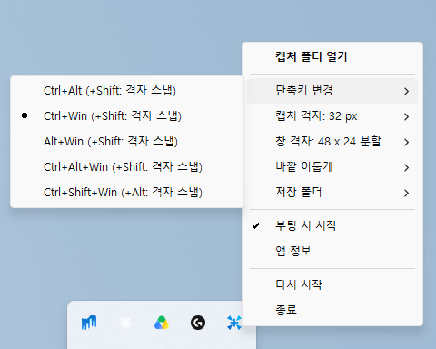

Windows 논스톱 캡처 유틸 Non-stop capture utility for Windows
드래그 즉시 캡처 - 스윕캡 Capture the moment you drag - SweepCap
- 드래그 도중 Shift를 누르면 선택 영역에 격자 맞춤 적용 Shift during a drag aligns the selection to a grid
- 창 크기 조절 중에 단축키를 누르면 창 크기를 격자에 맞춤 The shortcut while resizing a window aligns its size to a grid
- 원하는 단축키 조합과 격자 크기 선택 가능 Shortcut combination and grid size are yours to pick
- 캡처는 Pictures\SweepCap 에 날짜별 폴더로 저장 Captures saved under Pictures\SweepCap in a folder per date
- 트레이 아이콘 더블클릭으로 저장된 폴더 열기 Double-click the tray icon to open the folder they went to
- 원하는 저장 폴더 지정 가능 Any folder you like as the save location
Ctrl+Win + 드래그Ctrl+Win + drag
영역 캡처Capture a region
Ctrl+Win + 클릭Ctrl+Win + click
창 혹은 전체화면(바탕화면 클릭 시) 캡처
Capture a window, or the whole screen when the desktop is clicked
